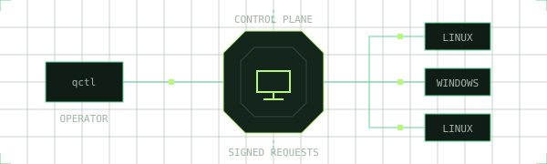
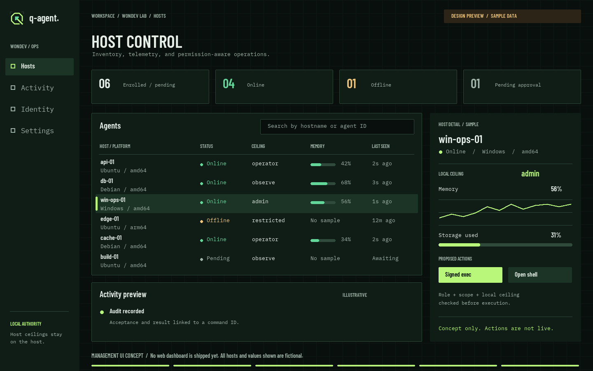
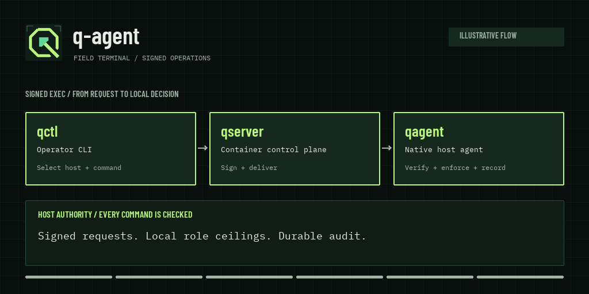

Your fleet.
Your command.
Know your hosts. Run signed commands. Open encrypted shells. Keep the limits of remote control on the machine that matters.

# A command for an operator-ceiling host
$ qctl exec agent-ID --role operator -- /usr/bin/id
uid=1000(agent) gid=1000(agent)
THE PLATFORM / 01
Two surfaces.
One deliberate architecture.
A small host agent and a standalone control plane. Each component has a clear job, and the cryptographic boundaries are explicit.
qserver
Enrollment, command signing, telemetry, and mirrored audit. Packaged as a container with the operator CLI inside.
Encrypted shell frames
qagent
A native binary that collects host telemetry, verifies every command, and enforces its locally configured role ceiling.
CGO-free builds. OS service commands. Cryptographic algorithms resolved through a versioned policy registry.
Explore the architecture ↗A clear view.
Down to the host.
The proposed host console brings inventory, local permissions, and audit activity into one workspace. Today, use qctl for real operations.

01 / Fleet overviewConnection state and the local role ceiling sit beside every host.
02 / Host detailInspect memory and storage without losing the inventory context.
03 / Action historyFollow an example request through command delivery and audit.
PRODUCT WALKTHROUGH
Trust is checked
at the host.
Follow a signed command, explore an encrypted shell session, or review the implemented features. Choose a view and play its short illustration. The native agent enforces the host's local permissions.

THE BOUNDARY / 02
The ceiling stays
with the host.
A signed request is still checked against the agent's local permissions. An operator-level host cannot be turned into an admin shell by a server request.
Read the security model ↗THE ENGINE / 03
Operations with
a verifiable trail.
See the host.
Host inventory and memory/storage telemetry, with a durable local buffer and reconnect backoff when the network disappears.
DURABLE REPLAY
Authorize every action.
Command Authority signatures, target binding, expiry, and persistent replay protection. PTY on Unix; ConPTY on Windows.
LOCAL ROLE CHECKS
Keep shell content at the edge.
HPKE X-Wing establishes session keys. Ordered AEAD frames carry input and output through a relay that does not decrypt them.
ENDPOINT ENCRYPTION
Encryption scope is explicit: interactive shell payloads are end-to-end encrypted. One-shot exec arguments and results are visible to the control plane.
START SMALL / 04
One server.
Your first host.
Build the control plane from source with Docker Compose. Enroll a native agent with an exported public CA and a one-time token.
Follow the complete guide
Standalone development deployment.
Optional authenticated
operator API. No web dashboard yet.
# Configure deploy/.env using GUIDE.md first.
$ docker compose --env-file deploy/.env \
-f deploy/docker-compose.yml \
up --build -d --waitENGINEERING ROADMAP / 05
Clear scope.
Visible progress.
The code is in a private development repository. These are implementation milestones, not a claim of production or GA readiness.
-
00IMPLEMENTED
Foundation
Crypto registry, policy profiles, protocol contracts, and validation gates.
-
01IMPLEMENTED
Standalone MVP
Enrollment, native telemetry, certificate renewal, container deployment.
-
02IN PROGRESS
Exec & shell
Signed execution, encrypted shell, and the authenticated operator API and browser device login are available. Further hardening remains.
-
03–06PLANNED
Scale & release
Full KMS, HA, multi-region operations, native installers, and GA hardening.
A FEW DETAILS
Before you deploy.
Does the agent run in a container?
The host agent is a native binary with OS service support. It runs directly on the machine it observes. The control plane is the component packaged for Docker Compose.
Is this a live management dashboard?
No. This page introduces the project. The server exposes gRPC over TLS on port 8443. Operators use qctl locally or through the optional authenticated HTTPS API. A web management dashboard is a future option.
Can I use multiple server replicas today?
The current deployment is one server backed by SQLite and a soft keystore. Distributed gateway coordination, external KMS, and multi-region storage are later roadmap milestones.
Where do I start?
Use the operations guide for Windows and Linux instructions, CA-based enrollment, OS services, command examples, and backup/restore. Repository links require access to the private GitHub project.
BUILD WITH WONDEV
Bring your next
operation into focus.
Have an application idea, an integration request, or a fleet workflow to discuss? Tell us what you want to build and where it needs to run.
wondev.support@gmail.comTHE NEXT STEP IS A HOST.